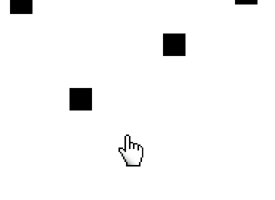

|
Snake Slither is improved google snake game. The game is full of many surprises and features that your typical snake game does not have. The main objective of the game is to eat as many gems as you can. The more gems you devour the faster and the longer your snake comes. If you have eat enough gems you can purchase a variety of different SnakeSlither skins. Gems will also grant you the option of revival. This is accessible on the 2nd of October 2019 in GitHub.com |
.png) |

Aim Clicker is a single player game, where you have to eliminate as many targets as possible. This is done in a 60 second time frame. Each time you complete a round the speed of the reappearing targets increase, thus making the game slowly harder. The game is going through some testing as new levels are being made and a multiplayer option will soon be added. Essential Gaming believes the game can increase brain muscle memory and can help competitive gamer's aim in a first person shooter. |